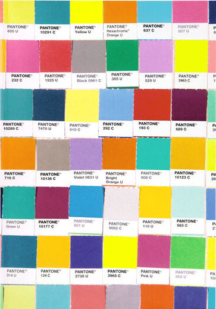

entry 01: exposition

Colour has fascinated me for as long as I can remember. I didn't quite understand how it worked when I was much younger. It definitely felt like magic in a lot of ways. Having understood how it works now, it still feels like magic. My harmonic collection is an ode to everything that thrills me about colour. It is a journey into learning and designing information just as I learn to write and interpret code.
So let's start with something mildly boring (obviously):
Tinfo